- Линейные уравнения с двумя переменными
- Система двух линейных уравнений с двумя переменными
- Метод подстановки
- Метод сложения
- Система линейных уравнений с тремя переменными
- Задачи на составление систем линейных уравнений
- Задания для самостоятельного решения
Линейные уравнения с двумя переменными
У школьника имеется 200 рублей, чтобы пообедать в школе. Пирожное стоит 25 рублей, а чашка кофе 10 рублей. Сколько пирожных и чашек кофе можно накупить на 200 рублей?
Обозначим количество пирожных через x, а количество чашек кофе через y. Тогда стоимость пирожных будет обозначаться через выражение 25x, а стоимость чашек кофе через 10y.
25x — стоимость x пирожных
10y — стоимость y чашек кофе
Итоговая сумма должна равняться 200 рублей. Тогда получится уравнение с двумя переменными x и y
\[25x + 10y = 200\]
Сколько корней имеет данное уравнение?
Всё зависит от аппетита школьника. Если он купит 6 пирожных и 5 чашек кофе, то корнями уравнения будут числа 6 и 5.
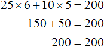
Говорят, что пара значений 6 и 5 являются корнями уравнения 25x + 10y = 200. Записывается как (6; 5), при этом первое число является значением переменной x, а второе — значением переменной y.
6 и 5 не единственные корни, которые обращают уравнение 25x + 10y = 200 в тождество. При желании на те же 200 рублей школьник может купить 4 пирожных и 10 чашек кофе:
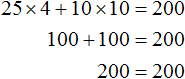
В этом случае корнями уравнения 25x + 10y = 200 является пара значений (4; 10).
Более того, школьник может вообще не покупать кофе, а купить пирожные на все 200 рублей. Тогда корнями уравнения 25x + 10y = 200 будут значения 8 и 0
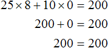
Или наоборот, не покупать пирожные, а купить кофе на все 200 рублей. Тогда корнями уравнения 25x + 10y = 200 будут значения 0 и 20
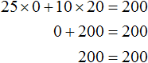
Попробуем перечислить все возможные корни уравнения 25x + 10y = 200. Условимся, что значения x и y принадлежат множеству целых чисел. И пусть эти значения будут бóльшими или равными нулю:
x ∈ Z, y ∈ Z;
x ≥ 0, y ≥ 0
Так будет удобно и самому школьнику. Пирожные удобнее покупать целыми, чем к примеру несколько целых пирожных и половину пирожного. Кофе также удобнее брать целыми чашками, чем к примеру несколько целых чашек и половину чашки.
Заметим, что при нечетном x невозможно достичь равенства ни при каком y. Тогда значениями x будут следующие числа 0, 2, 4, 6, 8. А зная x можно без труда определить y
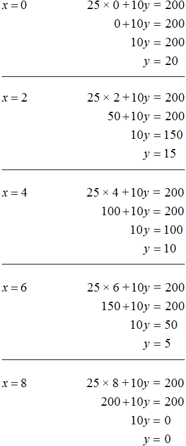
Таким образом, мы получили следующие пары значений (0; 20), (2; 15), (4; 10), (6; 5), (8; 0). Эти пары являются решениями или корнями уравнения 25x + 10y = 200. Они обращают данное уравнение в тождество.
Уравнение вида ax + by = c называют линейным уравнением с двумя переменными. Решением или корнями этого уравнения называют пару значений (x; y), которая обращает его в тождество.
Отметим также, что если линейное уравнение с двумя переменными записано в виде ax + by = c, то говорят, что оно записано в каноническом (нормальном) виде.
Некоторые линейные уравнения с двумя переменными могут быть приведены к каноническому виду.
Например, уравнение 2(16x + 3y − 4) = 2(12 + 8x − y) можно привести к виду ax + by = c. Раскроем скобки в обеих частях этого уравнения, получим 32x + 6y − 8 = 24 + 16x − 2y. Слагаемые, содержащие неизвестные сгруппируем в левой части уравнения, а слагаемые свободные от неизвестных — в правой. Тогда получим 32x − 16x + 6y + 2y = 24 + 8. Приведём подобные слагаемые в обеих частях, получим уравнение 16x + 8y = 32. Это уравнение приведено к виду ax + by = c и является каноническим.
Рассмотренное ранее уравнение 25x + 10y = 200 также является линейным уравнением с двумя переменными в каноническом виде. В этом уравнении параметры a, b и c равны значениям 25, 10 и 200 соответственно.
На самом деле уравнение ax + by = c имеет бесчисленное множество решений. Решая уравнение 25x + 10y = 200, мы искали его корни только на множестве целых чисел. В результате получили несколько пар значений, которые обращали данное уравнение в тождество. Но на множестве рациональных чисел уравнение 25x + 10y = 200 будет иметь бесчисленное множество решений.
Для получения новых пар значений, нужно взять произвольное значение для x, затем выразить y. К примеру, возьмем для переменной x значение 7. Тогда получим уравнение с одной переменной 25 × 7 + 10y = 200 в котором можно выразить y
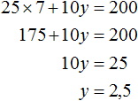
Пусть x = 15. Тогда уравнение 25x + 10y = 200 примет вид 25 × 15 + 10y = 200. Отсюда находим, что y = −17,5
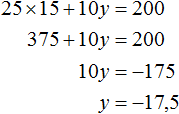
Пусть x = −3. Тогда уравнение 25x + 10y = 200 примет вид 25 × (−3) + 10y = 200. Отсюда находим, что y = 27,5
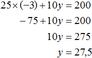
Система двух линейных уравнений с двумя переменными
Для уравнения ax + by = c можно сколько угодно раз брать произвольные значение для x и находить значения для y. Отдельно взятое такое уравнение будет иметь бесчисленное множество решений.
Но бывает и так, что переменные x и y связаны не одним, а двумя уравнениями. В этом случае они образуют так называемую систему линейных уравнений с двумя переменными. Такая система уравнений может иметь одну пару значений (или по-другому: «одно решение»).
Может случиться и так, что система вовсе не имеет решений. Бесчисленное множество решений система линейных уравнений может иметь в редких и в исключительных случаях.
Два линейных уравнения образуют систему тогда, когда значения x и y входят в каждое из этих уравнений.
Вернемся к самому первому уравнению 25x + 10y = 200. Одной из пар значений для этого уравнения была пара (6; 5). Это случай, когда на 200 рублей можно можно было купить 6 пирожных и 5 чашек кофе.
Составим задачу так, чтобы пара (6; 5) стала единственным решением для уравнения 25x + 10y = 200. Для этого составим ещё одно уравнение, которое связывало бы те же x пирожных и y чашечек кофе.
Поставим текст задачи следующим образом:
«Школьник купил на 200 рублей несколько пирожных и несколько чашек кофе. Пирожное стоит 25 рублей, а чашка кофе 10 рублей. Сколько пирожных и чашек кофе купил школьник, если известно что количество пирожных на одну единицу больше количества чашек кофе?»
Первое уравнение у нас уже есть. Это уравнение 25x + 10y = 200. Теперь составим уравнение к условию «количество пирожных на одну единицу больше количества чашек кофе».
Количество пирожных это x, а количество чашек кофе это y. Можно записать эту фразу с помощью уравнения x − y = 1. Это уравнение будет означать, что разница между пирожными и кофе составляет 1.
Либо второе уравнение можно записать как x = y + 1. Это уравнение означает, что количество пирожных на единицу больше, чем количество чашек кофе. Поэтому для получения равенства, к количеству чашек кофе прибавлена единица. Это легко можно понять, если воспользоваться моделью весов, которые мы рассматривали при изучении простейших задач:
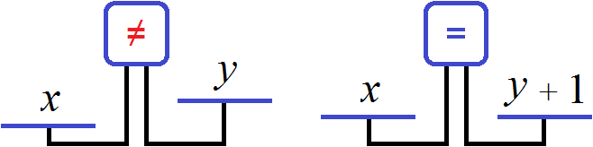
Получили два уравнения: 25x + 10y = 200 и x = y + 1. Поскольку значения x и y, а именно 6 и 5 входят в каждое из этих уравнений, то вместе они образуют систему. Запишем эту систему. Если уравнения образуют систему, то они обрамляются знаком системы. Знак системы это фигурная скобка:
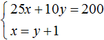
Давайте решим данную систему. Это позволит увидеть, как мы придём к значениям 6 и 5. Существует много методов решения таких систем. Рассмотрим наиболее популярные из них.
Метод подстановки
Название этого метода говорит само за себя. Суть его заключается в том, чтобы одно уравнение подставить в другое, предварительно выразив одну из переменных.
В нашей системе ничего выражать не нужно. Во втором уравнении x = y + 1 переменная x уже выражена. Эта переменная равна выражению y + 1. Тогда можно подставить это выражение в первое уравнение вместо переменной x
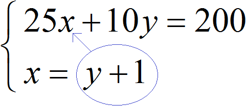
После подстановки выражения y + 1 в первое уравнение вместо x, получим уравнение 25(y + 1) + 10y = 200. Это линейное уравнение с одной переменной. Такое уравнение решить довольно просто:
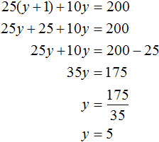
Мы нашли значение переменной y. Теперь подставим это значение в одно из уравнений и найдём значение x. Для этого удобно использовать второе уравнение x = y + 1. В него и подставим значение y
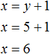
Значит пара (6; 5) является решением системы уравнений, как мы и задумывали. Выполняем проверку и убеждаемся, что пара (6; 5) удовлетворяет системе:
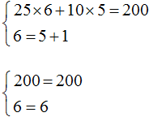
Пример 2. Решить методом подстановки следующую систему уравнений:
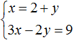
Подставим первое уравнение x = 2 + y во второе уравнение 3x − 2y = 9. В первом уравнении переменная x равна выражению 2 + y. Это выражение и подставим во второе уравнение вместо x
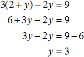
Теперь найдём значение x. Для этого подставим значение y в первое уравнение x = 2 + y
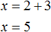
Значит решением системы является пара значение (5; 3)
Пример 3. Решить методом подстановки следующую систему уравнений:
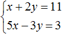
Здесь в отличие от предыдущих примеров, одна из переменных не выражена явно.
Чтобы подставить одно уравнение в другое, сначала нужно выразить одну из переменных.
Выражать желательно ту переменную, которая имеет коэффициент единицу. Коэффициент единицу имеет переменная x, которая содержится в первом уравнении x + 2y = 11. Эту переменную и выразим.
После выражения переменной x, наша система примет следующий вид:
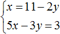
Теперь подставим первое уравнение во второе и найдем значение y
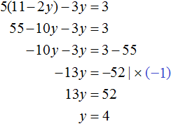
Подставим y в первое уравнение и найдём x
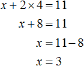
Значит решением системы является пара значений (3; 4)
Конечно, выражать можно и переменную y. Корни от этого не изменятся. Но если выразить y, получится не очень-то и простое уравнение, на решение которого уйдет больше времени. Выглядеть это будет следующим образом:
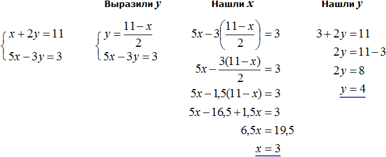
Видим, что в данном примере выражать x намного удобнее, чем выражать y.
Пример 4. Решить методом подстановки следующую систему уравнений:
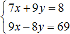
Выразим в первом уравнении x. Тогда система примет вид:
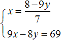
Подставим первое уравнение во второе и найдём y
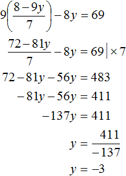
Подставим y в первое уравнение и найдём x. Можно воспользоваться изначальным уравнением 7x + 9y = 8, либо воспользоваться уравнением
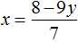
, в котором выражена переменная x. Этим уравнением и воспользуемся, поскольку это удобно: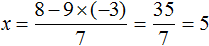
Значит решением системы является пара значений (5; −3)
Метод сложения
Метод сложения заключается в том, чтобы почленно сложить уравнения, входящие в систему. Это сложение приводит к тому, что образуется новое уравнение с одной переменной. А решить такое уравнение довольно просто.
Решим следующую систему уравнений:
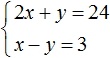
Сложим левую часть первого уравнения с левой частью второго уравнения. А правую часть первого уравнения с правой частью второго уравнения. Получим следующее равенство:
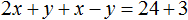
Приведем подобные слагаемые:
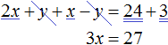
В результате получили простейшее уравнение 3x = 27 корень которого равен 9. Зная значение x можно найти значение y. Подставим значение x во второе уравнение x − y = 3. Получим 9 − y = 3. Отсюда y = 6.
Значит решением системы является пара значений (9; 6)
Пример 2. Решить следующую систему уравнений методом сложения:
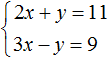
Сложим левую часть первого уравнения с левой частью второго уравнения. А правую часть первого уравнения с правой частью второго уравнения. В получившемся равенстве приведем подобные слагаемые:
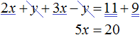
В результате получили простейшее уравнение 5x = 20, корень которого равен 4. Зная значение x можно найти значение y. Подставим значение x в первое уравнение 2x + y = 11. Получим 8 + y = 11. Отсюда y = 3.
Значит решением системы является пара значений (4;3)
Процесс сложения подробно не расписывают. Его нужно выполнять в уме. При сложении оба уравнения должны быть приведены к каноническому виду. То есть к виду ax + by = c.
Из рассмотренных примеров видно, что основная цель сложения уравнений это избавление от одной из переменных. Но не всегда удаётся сразу решить систему уравнений методом сложения. Чаще всего систему предварительно приводят к виду, при котором можно сложить уравнения, входящие в эту систему.
Например, систему
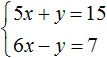
можно сразу решить методом сложения. При сложении обоих уравнений, слагаемые y и −y исчезнут, поскольку их сумма равна нулю. В результате образуется простейшее уравнение 11x = 22, корень которого равен 2. Затем можно будет определить y равный 5.А систему уравнений
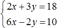
методом сложения сразу решить нельзя, поскольку это не приведёт к исчезновению одной из переменных. Сложение приведет к тому, что образуется уравнение 8x + y = 28, имеющее бесчисленное множество решений.Если обе части уравнения умножить или разделить на одно и то же число, не равное нулю, то получится уравнение равносильное данному. Это правило справедливо и для системы линейных уравнений с двумя переменными. Одно из уравнений (или оба уравнения) можно умножить на какое-нибудь число. В результате получится равносильная система, корни которой будут совпадать с предыдущей.
Вернемся к самой первой системе , которая описывала сколько пирожных и чашек кофе купил школьник. Решением этой системы являлась пара значений (6; 5).
Умножим оба уравнения, входящие в эту систему на какие-нибудь числа. Скажем первое уравнение умножим на 2, а второе на 3
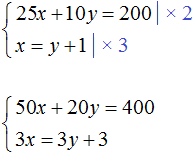
В результате получили систему
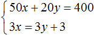
Решением этой системы по-прежнему является пара значений (6; 5)
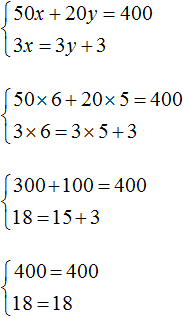
Это значит, что уравнения входящие в систему можно привести к виду, пригодному для применения метода сложения.
Вернемся к системе , которую мы не смогли решить методом сложения.
Умножим первое уравнение на 6, а второе на −2
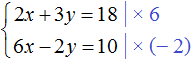
Тогда получим следующую систему:
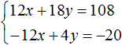
Сложим уравнения, входящие в эту систему. Сложение компонентов 12x и −12x даст в результате 0, сложение 18y и 4y даст 22y, а сложение 108 и −20 даст 88. Тогда получится уравнение 22y = 88, отсюда y = 4.
Если первое время тяжело складывать уравнения в уме, то можно записывать как складывается левая часть первого уравнения с левой частью второго уравнения, а правая часть первого уравнения с правой частью второго уравнения:
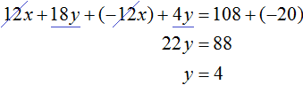
Зная, что значение переменной y равно 4, можно найти значение x. Подставим y в одно из уравнений, например в первое уравнение 2x + 3y = 18. Тогда получим уравнение с одной переменной 2x + 12 = 18. Перенесем 12 в правую часть, изменив знак, получим 2x = 6, отсюда x = 3.
Пример 4. Решить следующую систему уравнений методом сложения:
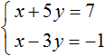
Умножим второе уравнение на −1. Тогда система примет следующий вид:
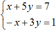
Сложим оба уравнения. Сложение компонентов x и −x даст в результате 0, сложение 5y и 3y даст 8y, а сложение 7 и 1 даст 8. В результате получится уравнение 8y = 8, корень которого равен 1. Зная, что значение y равно 1, можно найти значение x.
Подставим y в первое уравнение, получим x + 5 = 7, отсюда x = 2
Пример 5. Решить следующую систему уравнений методом сложения:
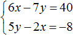
Желательно, чтобы слагаемые содержащие одинаковые переменные, располагались друг под другом. Поэтому во втором уравнении слагаемые 5y и −2x поменяем местами. В результате система примет вид:
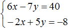
Умножим второе уравнение на 3. Тогда система примет вид:
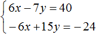
Теперь сложим оба уравнения. В результате сложения получим уравнение 8y = 16, корень которого равен 2.
Подставим y в первое уравнение, получим 6x − 14 = 40. Перенесем слагаемое −14 в правую часть, изменив знак, получим 6x = 54. Отсюда x = 9.
Пример 6. Решить следующую систему уравнений методом сложения:
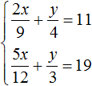
Избавимся от дробей. Умножим первое уравнение на 36, а второе на 12
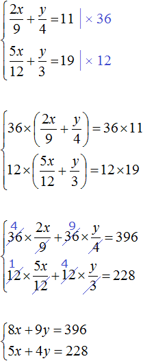
В получившейся системе
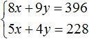
первое уравнение можно умножить на −5, а второе на 8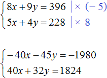
Сложим уравнения в получившейся системе. Тогда получим простейшее уравнение −13y = −156. Отсюда y = 12. Подставим y в первое уравнение и найдем x
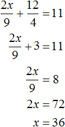
Пример 7. Решить следующую систему уравнений методом сложения:
Приведем оба уравнения к нормальному виду. Здесь удобно применить правило пропорции в обоих уравнениях. Если в первом уравнении правую часть представить как  , а правую часть второго уравнения как , то система примет вид:
, а правую часть второго уравнения как , то система примет вид:
У нас получилась пропорция. Перемножим её крайние и средние члены. Тогда система примет вид:
Первое уравнение умножим на −3, а во втором раскроем скобки:
Теперь сложим оба уравнения. В результате сложения этих уравнений, мы получим равенство, в обеих частях которого будет ноль:
Получается, что система имеет бесчисленное множество решений.
Но мы не можем просто так взять с неба произвольные значения для x и y. Мы можем указать одно из значений, а другое определится в зависимости от значения, указанного нами. Например, пусть x = 2. Подставим это значение в систему:
В результате решения одного из уравнений, определится значение для y, которое будет удовлетворять обоим уравнениям:
Получившаяся пара значений (2; −2) будет удовлетворять системе:
Найдём еще одну пару значений. Пусть x = 4. Подставим это значение в систему:
На глаз можно определить, что значение y равно нулю. Тогда получим пару значений (4; 0), которая удовлетворяет нашей системе:
Пример 8. Решить следующую систему уравнений методом сложения:
Умножим первое уравнение на 6, а второе на 12
Перепишем то, что осталось:
Раскроем скобки в обоих уравнениях и приведём подобные слагаемые:
Первое уравнение умножим на −1. Тогда система примет вид:
Теперь сложим оба уравнения. В результате сложения образуется уравнение 6b = 48, корень которого равен 8. Подставим b в первое уравнение и найдём a
Система линейных уравнений с тремя переменными
В линейное уравнение с тремя переменными входит три переменные с коэффициентами, а также свободный член. В каноническом виде его можно записать следующим образом:
\[ax + by + cz = d\]
Данное уравнение имеет бесчисленное множество решений. Придавая двум переменным различные значения, можно найти третье значение. Решением в этом случае является тройка значений (x; y; z) которая обращает уравнение в тождество.
Если переменные x, y, z связаны между собой тремя уравнениями, то образуется система трех линейных уравнений с тремя переменными. Для решения такой системы можно применять те же методы, которые применяются к линейным уравнениям с двумя переменными: метод подстановки и метод сложения.
Пример 1. Решить следующую систему уравнений методом подстановки:
Выразим в третьем уравнении x. Тогда система примет вид:
Теперь выполним подстановку. Переменная x равна выражению 3 − 2y − 2z. Подставим это выражение в первое и второе уравнение:
Раскроем скобки в обоих уравнениях и приведём подобные слагаемые:
Мы пришли к системе линейных уравнений с двумя переменными. В данном случае удобно применить метод сложения. В результате переменная y исчезнет, и мы сможем найти значение переменной z
Теперь найдём значение y. Для этого удобно воспользоваться уравнением −y + z = 4. Подставим в него значение z
Теперь найдём значение x. Для этого удобно воспользоваться уравнением x = 3 − 2y − 2z. Подставим в него значения y и z
Таким образом, тройка значений (3; −2; 2) является решением нашей системы. Проверкой убеждаемся, что эти значения удовлетворяют системе:
Пример 2. Решить систему методом сложения
Сложим первое уравнение со вторым, умноженным на −2.
Если второе уравнение умножить на −2, то оно примет вид −6x + 6y − 4z = −4. Теперь сложим его с первым уравнением:
Видим, что в результате элементарных преобразований, определилось значение переменной x. Оно равно единице.
Вернемся к главной системе. Сложим второе уравнение с третьим, умноженным на −1. Если третье уравнение умножить на −1, то оно примет вид −4x + 5y − 2z = −1. Теперь сложим его со вторым уравнением:
Получили уравнение x − 2y = −1. Подставим в него значение x, которое мы находили ранее. Тогда мы сможем определить значение y
Теперь нам известны значения x и y. Это позволяет определить значение z. Воспользуемся одним из уравнений, входящим в систему:
Таким образом, тройка значений (1; 1; 1) является решением нашей системы. Проверкой убеждаемся, что эти значения удовлетворяют системе:
Задачи на составление систем линейных уравнений
Задача на составление систем уравнений решается путем ввода нескольких переменных. Далее составляются уравнения на основании условий задачи. Из составленных уравнений образуют систему и решают её. Решив систему, необходимо выполнить проверку на то, удовлетворяет ли её решение условиям задачи.
Задача 1. Из города в колхоз выехала машина «Волга». Обратно она возвращалась по другой дороге, которая была на 5 км короче первой. Всего в оба конца машина проехала 35 км. Сколько километров составляет длина каждой дороги?
Решение
Пусть x — длина первой дороги, y — длина второй. Если в оба конца машина проехала 35 км, то первое уравнение можно записать как x + y = 35. Это уравнение описывает сумму длин обеих дорог.
Сказано, что обратно машина возвращалась по дороге которая была короче первой на 5 км. Тогда второе уравнение можно записать как x − y = 5. Это уравнение показывает, что разница между длинами дорог составляет 5 км.
Либо второе уравнение можно записать как x = y + 5. Этим уравнением и воспользуемся.
Поскольку переменные x и y в обоих уравнениях обозначают одно и то же число, то мы можем образовать из них систему:
Решим эту систему каким-нибудь из изученных ранее методов. В данном случае удобно воспользоваться методом подстановки, поскольку во втором уравнении переменная x уже выражена.
Подставим второе уравнение в первое и найдём y
Подставим найденное значение y в во второе уравнение x = y + 5 и найдём x
Длина первой дороги была обозначена через переменную x. Теперь мы нашли её значение. Переменная x равна 20. Значит длина первой дороги составляет 20 км.
А длина второй дороги была обозначена через y. Значение этой переменной равно 15. Значит длина второй дороги составляет 15 км.
Выполним проверку. Для начала убедимся, что система решена правильно:
Теперь проверим удовлетворяет ли решение (20; 15) условиям задачи.
Было сказано, что всего в оба конца машина проехала 35 км. Складываем длины обеих дорог и убеждаемся, что решение (20; 15) удовлетворяет данному условию: 20 км + 15 км = 35 км
Следующее условие: обратно машина возвращалась по другой дороге, которая была на 5 км короче первой. Видим, что решение (20; 15) удовлетворяет и этому условию, поскольку 15 км короче, чем 20 км на 5 км: 20 км − 15 км = 5 км
При составлении системы важно, чтобы переменные обозначали одни и те же числа во всех уравнениях, входящих в эту систему.
Так наша система содержит два уравнения. Эти уравнения в свою очередь содержат переменные x и y, которые обозначают одни и те же числа в обоих уравнениях, а именно длины дорог, равных 20 км и 15 км.
Задача 2. На платформу были погружены дубовые и сосновые шпалы, всего 300 шпал. Известно, что все дубовые шпалы весили на 1 т меньше, чем все сосновые. Определить, сколько было дубовых и сосновых шпал отдельно, если каждая дубовая шпала весила 46 кг, а каждая сосновая 28 кг.
Решение
Пусть x дубовых и y сосновых шпал было погружено на платформу. Если всего шпал было 300, то первое уравнение можно записать как x + y = 300.
Все дубовые шпалы весили 46x кг, а сосновые весили 28y кг. Поскольку дубовые шпалы весили на 1 т меньше, чем сосновые, то второе уравнение можно записать, как 28y − 46x = 1000. Это уравнение показывает, что разница масс между дубовыми и сосновыми шпалами, составляет 1000 кг.
Тонны были переведены в килограммы, поскольку масса дубовых и сосновых шпал измерена в килограммах.
В результате получаем два уравнения, которые образуют систему
Решим данную систему. Выразим в первом уравнении x. Тогда система примет вид:
Подставим первое уравнение во второе и найдём y
Подставим y в уравнение x = 300 − y и узнаем чему равно x
Значит на платформу было погружено 100 дубовых и 200 сосновых шпал.
Проверим удовлетворяет ли решение (100; 200) условиям задачи. Для начала убедимся, что система решена правильно:
Было сказано, что всего было 300 шпал. Складываем количество дубовых и сосновых шпал и убеждаемся, что решение (100; 200) удовлетворяет данному условию: 100 + 200 = 300.
Следующее условие: все дубовые шпалы весили на 1 т меньше, чем все сосновые. Видим, что решение (100; 200) удовлетворяет и этому условию, поскольку 46 × 100 кг дубовых шпал легче, чем 28 × 200 кг сосновых шпал: 5600 кг − 4600 кг = 1000 кг.
Задача 3. Взяли три куска сплава меди с никелем в отношениях 2 : 1, 3 : 1 и 5 : 1 по массе. Из них сплавлен кусок массой 12 кг с отношением содержания меди и никеля 4 : 1. Найдите массу каждого исходного куска, если масса первого из них вдвое больше массы второго.
Решение
Пусть x — масса первого куска, y — масса второго куска, z — масса третьего куска. Если из этих кусков сплавлен кусок массой 12 кг, то первое уравнение можно записать как x + y + z = 12.
Масса первого куска вдвое больше массы второго куска. Тогда второе уравнение можно записать как x = 2y.
Полученных двух уравнений недостаточно для решения данной задачи. Если второе уравнение подставить в первое, то мы получим уравнение 2y + y + z = 12, откуда 3y + z = 12. Это уравнение имеет бесчисленное множество решений.
Составим ещё одно уравнение. Пусть это уравнение будет описывать количество меди, взятого с каждого сплава и сколько меди оказалось в получившемся сплаве.
Если первый сплав имеет массу x, а медь и никель находится нём в отношении 2 : 1, то можно записать, что в новом сплаве содержится меди от первого куска.
Если второй сплав имеет массу y, а медь и никель находится в нём в отношении 3 : 1, то можно записать, что в новом сплаве содержится меди от второго куска.
Если третий сплав имеет массу z, а медь и никель находится в отношении 5 : 1, то можно записать, что в новом сплаве содержится меди от третьего куска.
Полученный сплав имеет имеет массу 12 кг, а медь и никель находится в нём в отношении 4 : 1. Тогда можно записать, что в полученном сплаве содержится меди.
Сложим , , и приравняем эту сумму к 9,6. Это и будет нашим третьим уравнением:
Попробуем решить данную систему.
Для начала упростим третье уравнение. Подставим в него второе уравнение и посмотрим, что из этого выйдет:
Теперь в главной системе вместо уравнения запишем уравнение, которое мы сейчас получили, а именно уравнение 25y + 10z = 115,2
Подставим второе уравнение в первое:
Умножим первое уравнение на −10. Тогда система примет вид:
Сложим оба уравнения. Тогда получим простейшее уравнение −5y = −4,8 откуда найдём y равный 0,96. Значит масса второго сплава составляет 0,96 кг.
Теперь найдём x. Для этого удобно воспользоваться уравнением x = 2y. Значение y уже известно. Осталось только подставить его:
Значит масса первого сплава составляет 1,92 кг.
Теперь найдём z. Для этого удобно воспользоваться уравнением x + y + z = 12. Значения x и y уже известны. Подставим их куда нужно:
Значит масса третьего сплава составляет 9,12 кг.
Задания для самостоятельного решения
Показать решение
Показать решение
Показать решение
Показать решение
Показать решение
Показать решение
Показать решение
Показать решение
Показать решение
Показать решение
Показать решение
Показать решение
Показать решение
Показать решение
Показать решение
Показать решение
Показать решение
Показать решение
Показать решение
Показать решение
Показать решение
Показать решение
Показать решение
Показать решение
Решение
Пусть x кг сена выдавали каждой лошади, и y кг каждой корове. Лошадей было 8, а коров 15. Это значит, что сена всем лошадям выдавали 8x кг, а всем коровам 15y кг. Вместе лошадям и коровам сена выдавали 162 кг. Тогда первое уравнение можно записать как 8x + 15y = 162
Известно, что 5 лошадей получали 5x кг сена, а 7 коров 7y кг. Если 5 лошадей получали на 3 кг больше сена, чем 7 коров, то второе уравнение можно записать как 5x − 7y = 3.
Поскольку в обоих уравнениях переменные x и y обозначают одно и то же число, то можно образовать из них систему и решить её
Ответ: ежедневно сена каждой лошади выдавали 9 кг, а каждой корове 6 кг.
Показать решение
Решение
Пусть x вагонов было подано для отправки y тонн груза. Погрузку груза в вагоны можно описать с помощью отношения . Это отношение показывает сколько тонн груза приходится на один вагон.
В первом случае в каждый вагон грузится 15,5 т. Тогда первое уравнение можно записать как . Но в условии сказано, что если грузить по 15,5 т в вагон, то 4 т груза останутся непогруженными. Это означает, что будет погружен не весь груз, а только y − 4 тонн груза. Поэтому первое уравнение перепишем как
Во втором случае в каждый вагон грузится 16,5 т. Тогда второе уравнение можно записать как . Но в задаче сказано, что если грузить по 16,5 т в вагон, то для полной загрузки вагонов не хватит 8 т груза. Это означает, что будет погружен весь груз, плюс останется места для погрузки ещё восьми тонн груза. Иными словами, при таком раскладе можно погрузить в вагоны y + 8 тонн груза. Поэтому второе уравнение перепишем как
Поскольку в обоих уравнениях переменные x и y обозначают одно и то же число, то можно образовать из них систему и решить её:
Ответ: вагонов было 12, а груза 190 тонн.
Показать решение
Решение
Пусть x скамеек было поставлено в зале, а учеников было y.
В первом случае на каждую скамейку сажается 5 учеников. Разделим y учеников по 5 человек и посадим их на x скамеек:
Но в условии сказано, что если посадить по 5 учеников на скамейку, то не хватит 8 скамеек. У нас имеется только x скамеек. Чтобы все y учеников смогли сесть на скамейки, добавим к x скамейкам ещё 8 скамеек
Во втором случае на каждую скамейку сажается 6 учеников. Разделим y учеников по 6 человек и посадим их на x скамеек:
Но в условии сказано, что если посадить по 6 учеников на скамейку, то 2 скамейки останутся свободными. В этом случае ученики сядут не на x, а на x − 2 скамейки. Перепишем второе уравнение в следующем виде:
Поскольку в обоих уравнениях переменные x и y обозначают одно и то же число, то можно образовать из них систему и решить её:
Ответ: скамеек было 52, а учеников 300.
Показать решение
Решение
Пусть x человек участвует в экскурсии, а расходы на эту экскурсию составляют y рублей.
Если каждый участник экскурсии внесет по 12 руб. 50 коп., то расходы составят 12,50x руб. При этом сказано, что в таком случае для покрытия расходов не хватит 100 руб. Чтобы покрыть расходы прибавим к расходам 12,50x еще 100 рублей
\[12,50x + 100\]
Выражение 12,50x + 100, как и переменная y описывает одну и ту же величину — расходы на экскурсию. Поэтому можно соединить эти два выражения знаком равенства, образуя тем самым первое уравнение для системы:
\[12,50x + 100 = y\]
Далее в задаче сказано, что если каждый участник внесёт по 16 руб., то останется излишек 12 руб. Поскольку количество участников это x, то расходы при таком раскладе составят 16x. Расходы в 16x рублей больше планируемых y рублей на 12 руб. Чтобы получить второе уравнение вычтем из 16x руб излишек 12 руб.
\[16x - 12\]
Как и предыдущее выражение 12,50x + 100, выражение 16x − 12 описывает расходы на экскурсию и его можно приравнять к переменной y. Это будет вторым уравнением для системы:
\[16x - 12 = y\]
Получили два уравнения: 12,50x + 100 = y и 16x − 12 = y. Переменные x и y обозначают одно и то же число, поэтому можно образовать из них систему и решить её:
Значит в экскурсии участвует 32 человека.
В данной задаче не стоял вопрос какими будут расходы на экскурсию. Но для интереса можно вычислить и их:
Ответ: в экскурсии участвует 32 человека.
Возникло желание поддержать проект?
Используй кнопку ниже